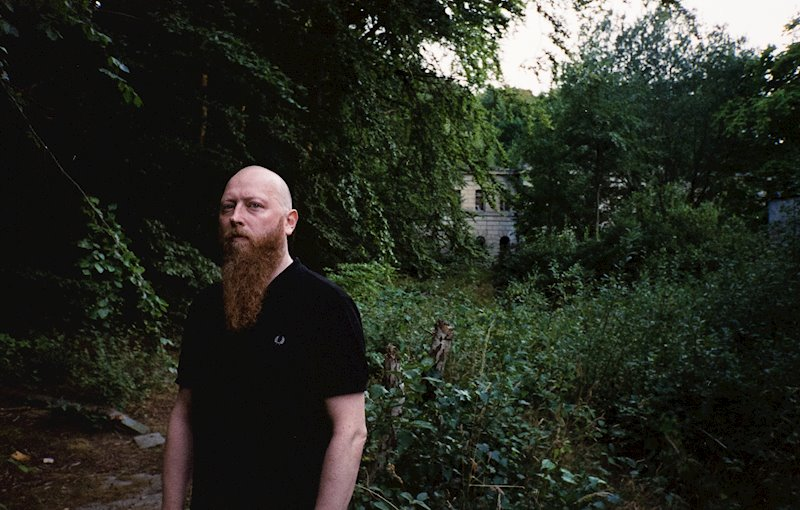

What is OF THE WAND AND THE MOON?
Of the Wand And the Moon is a neofolk and experimental music project from Denmark, founded by solo musician Kim Larsen; in 1999. The project gained recognition for its mash of a dark ambient, and neofolk. The themes of most songs are melancholic.
MUSICIAL STYLES AND THEMES
The Genre that :Of the Wand and the Moon falls under is neofolk. (Although Larsen describes his own music as "loner folk", terminology that resonates wtih the gloomy and overall melancholic feels of his songs. He usually talks about things like love, nostalgia, religion and other subjects.
ORIGINS
Kim Larsen's early life is limited, due to the fact that he is pretty obscure. We do know that his band founded in 1999, his name, and that he was in a past metal band called "Saturnus", but left due to arguments.
LEGACY & FAME
Larsen's work has slightly impacted the neofolk scene, bringing connections with other artists and fans who share a passion for his gloomy, sad neofolk music or whatever.. ..I sound emo already.
CONCLUSION
:Of the Wand and the Moon, Led by Kim Larsen is a interesting band. Blending somber and a gloomy atmosphere with neofolk, often talking about topics like nostalgia, love, and religion. All in all, he makes fire music yo!
HOW I WAS INTRODUCED
I was in Dallas, Texas for a roadtrip to see family; and I went to a record shop to find some punk patches. I was just looking around when I found a CD of the Lucifer album, the one with the cats. I thought it looked cool, so I searched it up and gave it a listen. I was really suprised of what I heard! Even more suprised when I realized they were in the same music genre as Death in June, a previous band I had listened to in the past. They even played together, which I dont know what to think about.

The man himself, Kim Larsen; standing in a forest or something.